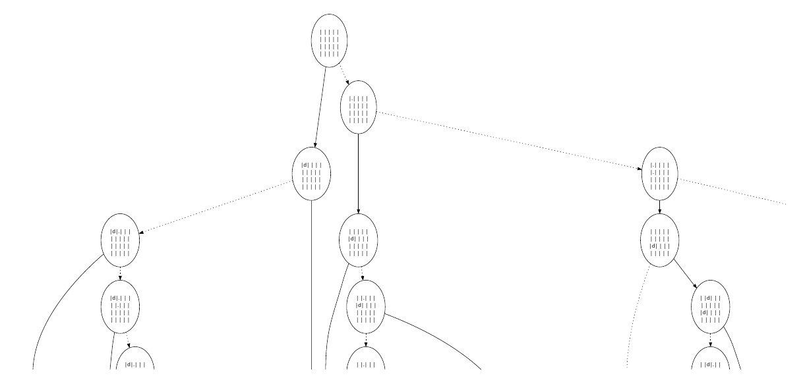

Here comes `blatt 06` (complex.cpp, complex.hpp, complexTest.cpp, image.cpp, image.hpp, imageMain.cpp, imageTest.cpp, newton.cpp, newton.hpp, newtonfractal.cpp, newtonfractal.hpp, poly.hpp, poly1.cpp, polyTest.cpp ):
Here is complex.cpp:
#include
#include "complex.hpp"
// x+iy + (x'+iy') = (x+x') + i (y+y')
Complex add(Complex a, Complex b) {
Complex c;
c.im = a.im + b.im;
c.re = a.re + b.re;
return c;
}
// (x+iy) * (x'+iy') = xx' - yy' + i (xy' +x'y)
Complex Complex::operator *(Complex b) const {
Complex c;
c.re = this->re * b.re - this->im * b.im;
c.im = this->re * b.im + this->im * b.re;
return c;
}
// -(x+iy) = -x + i*(-y)
Complex unary_minus(Complex a) {
Complex c;
c.re = -a.re;
c.im = -a.im;
return c;
}
bool equal(Complex a, Complex b) { return (a.re == b.re) && (a.im == b.im); }
// (x+iy) / (x'+iy') = (x+iy) * (x'-iy') / (x'^2 - y'^2)
// = (xx' + yy') / (x'^2 - y'^2) + i * (-xy' + x'y) / (x'^2 - y'^2)
Complex div(Complex a, Complex b) {
Complex c;
const double norm = (b.re * b.re + b.im * b.im);
c.re = (a.re * b.re + a.im * b.im) / norm;
c.im = (-a.re * b.im + a.im * b.re) / norm;
return c;
}
// 1/ (x+iy) = (x-iy) / (x^2 - y^2)
Complex inverse(Complex a) {
Complex c;
const double norm = (a.re * a.re + a.im * a.im);
c.re = a.re / norm;
c.im = -a.im / norm;
return c;
}
void print(Complex a) { printf("%f +i * %f\n", a.re, a.im); }
double Complex::norm2() { return (this->re * this->re + this->im * this->im); }
Complex minus(Complex a, Complex b) { return add(a, unary_minus(b)); }
// namespace Complex
#include "complex.hpp"
#include
#define ASSERT_COMPLEX_EQ(a, b) \
{ \
const Complex mya = (a); \
const Complex myb = (b); \
ASSERT_DOUBLE_EQ(mya.re, myb.re); \
ASSERT_DOUBLE_EQ(mya.im, myb.im); \
}
TEST(complextest, add) {
const Complex a(2,3);
const Complex b(3,2);
const Complex c = add(a, b);
ASSERT_COMPLEX_EQ(a, a);
const Complex d(6,5);
ASSERT_FALSE(equal(c, d));
const Complex e(5,5);
ASSERT_COMPLEX_EQ(c, e);
ASSERT_COMPLEX_EQ(add(c, c), add(e, e));
}
TEST(complextest, mult) {
const Complex a(2,4);
const Complex two(2);
const Complex one(1);
ASSERT_COMPLEX_EQ(a * one, a);
ASSERT_COMPLEX_EQ(a * two, add(a, a));
ASSERT_COMPLEX_EQ(a * inverse(a), one);
}
TEST(complextest, div) {
const Complex a(2,4);
const Complex two(2);
const Complex one(1);
ASSERT_COMPLEX_EQ(div(a, one), a);
ASSERT_COMPLEX_EQ(a, div(add(a, a), two));
ASSERT_COMPLEX_EQ(div(one, div(one, a)), a);
}
TEST(complextest, inverse) {
const Complex a(2,4);
const Complex two(2);
const Complex one(1);
ASSERT_COMPLEX_EQ(inverse(one), one);
ASSERT_COMPLEX_EQ(one, a * inverse(a));
ASSERT_COMPLEX_EQ(inverse(inverse(a)), a);
}
TEST(complextest, multdiv) {
{
Complex a(0,1);
Complex b(0,2);
Complex d = div(a, b);
Complex e = inverse(b);
Complex f = a*e;
ASSERT_COMPLEX_EQ(d, f);
}
{
Complex a(0,1);
Complex b = inverse(a);
Complex c = a*b;
Complex d(1);
ASSERT_COMPLEX_EQ(c, d);
}
}
int main() {
testing::InitGoogleTest();
return RUN_ALL_TESTS();
}
#include
#include
#include
#include
#include
#include
#include "image.hpp"
#include "newton.hpp"
unsigned Image::find_max() const {
int curr_max = 0;
for (int y = 0; y < y_size; ++y) {
for (int x = 0; x < x_size; ++x) {
curr_max = std::max(curr_max, image[y * x_size * 3 + x * 3 + 0]);
curr_max = std::max(curr_max, image[y * x_size * 3 + x * 3 + 1]);
curr_max = std::max(curr_max, image[y * x_size * 3 + x * 3 + 2]);
}
}
return curr_max;
}
void Image::print_binary_image(const char *filename) const {
std::ofstream fp(filename, std::ios_base::out | std::ios_base::binary);
const char *comment = "# file created by Mathias Fleury\n";
unsigned int curr_max = find_max();
const int max_bound = 255;
const char *format = "P6\n";
fp << format << comment << x_size << " " << y_size << "\n" << max_bound;
for (int y = 0; y < y_size; ++y) {
for (int x = 0; x < x_size; ++x) {
const char r = image[y * x_size * 3 + x * 3 + 0] * max_bound / curr_max;
const char g = image[y * x_size * 3 + x * 3 + 1] * max_bound / curr_max;
const char b = image[y * x_size * 3 + x * 3 + 2] * max_bound / curr_max;
fp << r << g << b;
}
}
fp.close();
}
void Image::print_image(const char *filename) const {
FILE *fp = fopen(filename, "w");
const char *comment = "# file created by Mathias Fleury";
unsigned int curr_max = find_max();
const int max_bound = 65535;
const char *format = "P3";
fprintf(fp, "%s\n %s\n %d %d\n %d\n", format, comment, x_size, y_size,
max_bound);
for (int y = 0; y < y_size; ++y) {
for (int x = 0; x < x_size; ++x) {
const int r = image[y * x_size * 3 + x * 3 + 0] * max_bound / curr_max;
const int g = image[y * x_size * 3 + x * 3 + 1] * max_bound / curr_max;
const int b = image[y * x_size * 3 + x * 3 + 2] * max_bound / curr_max;
fprintf(fp, "%d %d %d ", r, g, b);
}
fprintf(fp, "\n");
}
fclose(fp);
}
void Image::reserve (int new_x_capacity, int new_y_capacity) {
int old_x_capacity = std::max(x_capacity, new_x_capacity);
int old_y_capacity = std::max(y_capacity, new_y_capacity);
if (old_x_capacity == this->x_capacity && old_y_capacity == new_y_capacity)
return;
x_capacity = new_x_capacity;
y_capacity = new_y_capacity;
assert (x_size <= x_capacity);
assert (y_size <= y_capacity);
int *old_image = image;
image = (int *)malloc(x_capacity * y_capacity * 3 * sizeof(int));
for (int i = 0; i < x_size; ++i) {
for (int j = 0; j < y_size; ++j) {
for (int col = 0; col < 3; ++col)
image[j * x_size * 3 + i * 3 + col] =
old_image[j * x_size * 3 + i * 3 + col];
}
}
free(old_image);
}
// resize the underlying array, copies the old content to the new array and
// delete the old one.
void Image::resize(int x, int y) {
if (x < x_size && y < y_size)
return;
int old_x_size = x_size;
int old_y_size = y_size;
while (x_capacity <= x)
x_capacity *= 2;
while (y_capacity <= y)
y_capacity *= 2;
x_size = std::max(x + 1, old_x_size);
y_size = std::max(y + 1, old_y_size);
assert (x_size <= x_capacity);
assert (y_size <= y_capacity);
int *old_image = image;
image = (int *)malloc(x_capacity * y_capacity * 3 * sizeof(int));
for (int i = 0; i < old_x_size; ++i) {
for (int j = 0; j < old_y_size; ++j) {
for (int col = 0; col < 3; ++col)
image[j * x_size * 3 + i * 3 + col] =
old_image[j * old_x_size * 3 + i * 3 + col];
}
}
free(old_image);
}
// setting the pixel and resizing if needed.
void Image::set_pixel(int x, int y, int r, int g, int b) {
if (x >= x_size || y >= y_size) {
resize(x, y);
}
image[y * x_size * 3 + x * 3 + 0] = r;
image[y * x_size * 3 + x * 3 + 1] = g;
image[y * x_size * 3 + x * 3 + 2] = b;
}
// Calculate the average of the neightboling offset. To be safe, we do not
// assume that we have at least one cell (e.g., if the given point (x,y) is
// outside of the picture.
unsigned Image::average(int x, int y, int offset) const {
assert(offset < 3);
int cells = 0;
int number_of_cells = 0;
const int size_per_side = 10;
for (int i = x - size_per_side; i <= x + size_per_side; ++i) {
if (i < 0 || i >= x_size)
continue;
for (int j = y - size_per_side; j <= y + size_per_side; ++j) {
if (j < 0 || j >= y_size)
continue;
++number_of_cells;
cells += image[j * x_size * 3 + i * 3 + offset];
}
}
return number_of_cells ? cells / number_of_cells : 0;
}
void Image::smoothing() {
int *new_image = (int *)malloc(x_size * y_size * 3 * sizeof(int));
for (int i = 0; i < x_size; ++i) {
for (int j = 0; j < y_size; ++j) {
for (int col = 0; col < 3; ++col)
new_image[j * x_size * 3 + i * 3 + col] = average(i, j, col);
}
}
free(image);
image = new_image;
}
#include
#include
#include "complex.hpp"
#include "image.hpp"
#include "newtonfractal.hpp"
void do_nothing(Image) {
}
int main() {
// NB: it is important to change both values at the same time if you increase
// the number of iterations make the precision close to zero. Remember than
// Newton's method converges _fast_.
const int max_iterations = 30;
const double precision = 0.0001;
const double x_start = -2.5;
const double x_end = 2.5;
const double x_step = 0.01;
const double y_start = -5;
const double y_end = 5;
const double y_step = 0.01;
NewtonFractal frac(x_start, x_step, x_end, y_start, y_step, y_end,
max_iterations, precision);
Image img = frac.calculate();
img.smoothing();
do_nothing(img);
img.print_image("newton.ppm");
return 0;
}
#include
#include
#include "image.hpp"
TEST(ImageTest, sizeTest) {
Image test;
ASSERT_EQ(test.x_size, 0);
ASSERT_EQ(test.x_capacity, 1);
// (5, 0)
test.resize(5, 0);
ASSERT_EQ(test.x_size, 6);
ASSERT_EQ(test.x_capacity, 8);
test.set_pixel(1, 0, 1, 1, 1);
// (9, 0)
test.resize(9, 0);
ASSERT_EQ(test.x_size, 10);
ASSERT_EQ(test.x_capacity, 16);
test.set_pixel(7, 0, 1, 1, 1);
// (0, 0)
test.resize(0, 0);
ASSERT_EQ(test.x_size, 10);
ASSERT_EQ(test.x_capacity, 16);
// (10, 0)
test.resize(10, 0);
ASSERT_EQ(test.x_size, 11);
ASSERT_EQ(test.x_capacity, 16);
// (130, 0)
test.resize(130, 0);
ASSERT_EQ(test.x_size, 131);
ASSERT_EQ(test.x_capacity, 256);
// Testing that pixels have not disappeared
ASSERT_EQ(test.image[0 * test.x_size * 3 + 1 * 3 + 0], 1);
ASSERT_EQ(test.image[0 * test.x_size * 3 + 7 * 3 + 0], 1);
}
int main() {
testing::InitGoogleTest();
return RUN_ALL_TESTS();
}
#include
#include "complex.hpp"
#include "newton.hpp"
#include "poly.hpp"
Complex next_value(Complex z) {
Complex x = div(Polynom::poly(z), Polynom::derived_poly(z));
return minus(z, x);
}
Solution converges_to(Complex z, double precision, int max_iterations) {
bool finished = equal(z, Complex(0,0));
int root = 0, i;
for (i = 0; i < max_iterations && !finished; ++i, z = next_value(z)) {
root = Polynom::classify_root(z, precision);
finished = (root != 0);
}
return {.sol_number = root, .number_of_iterations = i};
}
#include "newtonfractal.hpp"
#include "image.hpp"
#include "newton.hpp"
#include
#include
Image NewtonFractal::calculate() {
const int x_size = (x_end - x_start) / x_step;
const int y_size = (y_end - y_start) / y_step;
printf("%d", x_size);
Image img (x_size, y_size);
for (int i = 0; i < y_size; ++i) {
for (int j = 0; j < x_size; ++j) {
const Complex starting_point (x_start + j * x_step, y_start + i * y_step);
Solution sol = converges_to(starting_point, precision, max_iterations);
int color =
static_cast(((double)max_iterations - sol.number_of_iterations) /
(double)max_iterations * (double)255);
int red = 0;
int green = 0;
int blue = 0;
switch (sol.sol_number) {
case 1:
red = color;
break;
case 2:
green = color;
break;
case 3:
blue = color;
break;
default:
break;
}
img.set_pixel(j, i, red, green, blue);
}
}
return img;
}
#include
#include
#include "poly.hpp"
Complex Polynom::poly(Complex z) {
Complex z3 = z * z * z;
Complex one(1, 0);
return minus(z3, one);
}
Complex Polynom::derived_poly(Complex z) {
Complex three(3);
Complex z2 = z * z;
Complex z3 = z2 * three;
return z3;
}
// We use the squared norm instead of taking the square root.
int Polynom::classify_root(Complex a, double precision) {
const Complex z1(1,0);
const Complex z2(-.5, sqrt(3) / 2.);
const Complex z3(-.5, -sqrt(3) / 2.);
if (minus(a, z1).norm2() < precision * precision)
return 1;
if (minus(a, z2).norm2() < precision * precision)
return 2;
if (minus(a, z3).norm2() < precision * precision)
return 3;
return 0;
}
#include
#include
#include "poly.hpp"
#define ASSERT_COMPLEX_EQ(a, b) \
{ \
const Complex mya = (a); \
const Complex myb = (b); \
ASSERT_DOUBLE_EQ(mya.re, myb.re); \
ASSERT_DOUBLE_EQ(mya.im, myb.im); \
}
TEST(PolyTest, poly) {
const Complex zero (0);
const Complex z1 (1);
const Complex z2 (-.5, sqrt(3) / 2.);
const Complex z3 (-.5, -sqrt(3) / 2.);
ASSERT_COMPLEX_EQ (Polynom::poly(z1), zero);
ASSERT_TRUE (Polynom::poly(z2).norm2() < 0.00000000001);
ASSERT_TRUE (Polynom::poly(z3).norm2() < 0.00000000001);
}
TEST(PolyTest, derived_poly) {
ASSERT_COMPLEX_EQ (Polynom::derived_poly(1), 3);
ASSERT_COMPLEX_EQ (Polynom::derived_poly(0), 0);
}
TEST(PolyTest, classify_root) {
const Complex z1 (1);
const Complex z2 (-.5, sqrt(3) / 2.);
const Complex z3 (-.5, -sqrt(3) / 2.);
const double precision = 0.00001;
const int r1 = Polynom::classify_root(z1, precision);
const int r2 = Polynom::classify_root(z2, precision);
const int r3 = Polynom::classify_root(z3, precision);
ASSERT_TRUE(r1 != r2);
ASSERT_TRUE(r1 != r3);
ASSERT_TRUE(r2 != r3);
const int r4 = Polynom::classify_root(add(z3, z3), precision);
ASSERT_TRUE (r4 == 0);
}
int main() {
testing::InitGoogleTest();
return RUN_ALL_TESTS();
}
#pragma once
// very simple modelisation of complex numbers with a real part and an imaginary part. We put into
// a namespace to avoid issue with std::equal...
class Complex {
public:
Complex(double real, double imaginary) : re (real), im (imaginary) {}
Complex(double real) : re (real), im (0) {}
Complex() : re (0), im (0) {}
// square absolute value
double re;
double im;
double norm2 ();
Complex operator*(Complex) const;
};
/// check for equality of 2 complex numbers
bool equal (Complex, Complex);
/// multiply two complex numbers
Complex mult (Complex, Complex);
/// divides two complex numbers. The second should not be zero.
Complex div (Complex, Complex);
/// addition of two complex numbers
Complex add (Complex, Complex);
Complex unary_minus (Complex);
/// inverse of complex numbers. The second should not be zero.
Complex inverse (Complex);
/// Prints a complex number with a line break
void print (Complex);
Complex minus (Complex, Complex);
#pragma once
#include
#include
// Very simple class to contain Image
//
// It supports setting a pixel directly and then some image specific
// transformation (smoothing and writing to a PPM file)
//
// Internally it uses the malloc-approach from the last lecture instead of new and delete.
class Image {
public:
explicit Image() : image (nullptr), x_size (0), x_capacity(1), y_size(0), y_capacity(1) {}
explicit Image(int x_size_, int y_size_) : x_size (x_size_), x_capacity(x_size_),
y_size(y_size_), y_capacity(y_size_) {
image = (int*) malloc (x_size * y_size * 3 * sizeof(int));
}
Image(Image & img) {
x_size = img.x_size;
y_size = img.y_size;
x_capacity = img.x_capacity;
y_capacity = img.y_capacity;
image = (int *)malloc(x_capacity * y_capacity * 3 * sizeof(int));
for (int y = 0; y < y_size; ++y) {
for (int x = 0; x < x_size; ++x) {
image[y * x_size * 3 + x * 3 + 0] = img.image[y * x_size * 3 + x * 3 + 0];
}
}
}
Image(Image && img) {
x_size = img.x_size;
y_size = img.y_size;
x_capacity = img.x_capacity;
y_capacity = img.y_capacity;
image = img.image;
}
~Image() {
free(image);
}
// write a PPM image from the pixel matrix with the given size.
//
// It does not free the array representing the image.
void print_image (const char *) const;
// write the binary version of the PPM file
//
// It does not free the array representing the image. Binary files are around one-third of the
// size.
void print_binary_image (const char *) const;
// destructive opteration: average the pixels over the entire picture.
void smoothing ();
// set the pixel (x,y) with the color given by the (r,g,b) as RGB encoding
void set_pixel (int x, int y, int r, int g, int b);
private:
/// array containing the image
int * image;
// max x of the image
int x_size, x_capacity;
// max y of the image
int y_size, y_capacity;
// returns the maximum of the image
unsigned find_max() const;
// average at pixel at color offset
unsigned average(int x, int y, int offset) const;
// resize the internal image to the new size and sets the size large enough according to the
// policy (Aufgabe 2 -> tight fit; Aufgabe 3 -> doubling the capacity)
void resize (int, int);
// reserve enough memory
void reserve (int, int);
FRIEND_TEST(ImageTest, sizeTest);
};
#pragma once
#include "complex.hpp"
// Structure representing the result of applying Newton's procedure. It contains to which solution
// the procedure converged to and the number of iterations that was required.
struct Solution {
int sol_number;
int number_of_iterations;
};
// Newton procedure to find root starting at z, until the precision is reached
// or we run of iterals
Solution converges_to (Complex z, double precision, int max_iterations);
#pragma once
#include "image.hpp"
class NewtonFractal {
public:
explicit NewtonFractal (double x_start_, double x_step_, double x_end_,
double y_start_, double y_step_, double y_end_,
int max_iterations_, double precision_) :
x_start (x_start_), x_step (x_step_), x_end (x_end_),
y_start (y_start_), y_step (y_step_), y_end (y_end_),
max_iterations(max_iterations_), precision (precision_) {
}
Image calculate ();
private:
double x_start, x_step, x_end;
double y_start, y_step, y_end;
int max_iterations;
double precision;
};
#pragma once
#include "complex.hpp"
#include
// Encompasses all calculation related to a polynom.
// We use static to avoid create a dummy object, but
// creating the object would work too.
class Polynom {
public:
// p: z -> z^3 - 1
static Complex poly (Complex);
// p: z -> 3*z^2
static Complex derived_poly (Complex);
// returns the number of the root
static int classify_root (Complex a, double precision);
FRIEND_TEST(PolyTest, poly);
FRIEND_TEST(PolyTest, derived_poly);
FRIEND_TEST(PolyTest, classify_root);
}; End of `blatt 06`.
Here comes skeleton_07 = {bdd.cpp, bdd.hpp, bddMain.cpp, bddTest.cpp, board.cpp, board.hpp, boardTest.cpp, node.cpp, node.hpp, nqueens.cpp, nqueens.hpp, nqueensMain.cpp, stack.cpp, stack.hpp, stackTest.cpp }:
Here is `bild01.png`
Here is bdd.cpp:
#include
#include
#include "bdd.hpp"
Node *BDD::import_node(const Board &b) {
/*TODO: Übungsblatt 8, Aufgabe 4*/
assert(false);
return nullptr;
}
void BDD::connect(Node *parent, Node *children, bool if_true) {
/*TODO: Übungsblatt 8, Aufgabe 4*/
assert(false);
}
void BDD::connect_true(Node *parent, bool if_true) {
/*TODO: Übungsblatt 8, Aufgabe 4*/
assert(false);
}
void BDD::connect_false(Node *parent, bool if_true) {
/*TODO: Übungsblatt 8, Aufgabe 4*/
assert(false);
}
std::ostream &operator<<(std::ostream &stream, const BDD &bdd) {
/*TODO: Übungsblatt 8, Aufgabe 4*/
assert(false);
return stream;
}
void BDD::write_dot_file(std::string file_path) const {
std::ofstream myfile;
myfile.open(file_path);
if (myfile.is_open()) {
myfile << *this;
myfile.close();
}
}
int BDD::count_true_path() const {
/*TODO: Übungsblatt 9, Aufgabe 7*/
assert(false);
return 0;
}
#include "bdd.hpp"
int main() { BDD bdd; }
#include
#include
#include
#include "bdd.hpp"
// In this test, we construct a simple BDD with boards of length 4 and we write
// the corresponding graph to a file.
TEST(BDDTest, basicTest) {
Board a(4);
Board b(4);
BDD bdd;
Node *a1 = bdd.import_node(a);
ASSERT_TRUE(a.has_next(true));
a.next(true);
Node *a2 = bdd.import_node(a);
ASSERT_TRUE(b.has_next(false));
b.next(false);
Node *b2 = bdd.import_node(b);
bdd.connect(a1, a2, true);
bdd.connect(a1, b2, false);
ASSERT_EQ(a1->if_true, a2);
ASSERT_EQ(a1->if_false, b2);
ASSERT_EQ(bdd.root, a1);
bdd.connect_true(a2, true);
bdd.connect_true(a2, false);
bdd.connect_true(b2, true);
bdd.connect_false(b2, false);
ASSERT_EQ(bdd.count_true_path(), 3);
std::ofstream myfile;
myfile.open("small_test_bdd.txt");
if (myfile.is_open()) {
myfile << bdd;
myfile.close();
}
}
int main() {
testing::InitGoogleTest();
return RUN_ALL_TESTS();
}
#include
#include
#include "board.hpp"
bool Board::has_next(bool taken) const {
int position_to_change = -1;
for (int i = 0; i < size; ++i) {
if (board[i] <= 0) {
position_to_change = i;
break;
}
}
if (position_to_change == -1)
return false;
const int value = board[position_to_change];
if (!taken && size == -value + 1)
return false;
return true;
}
void Board::next(bool taken) {
int position_to_change = -1;
for (int i = 0; i < size; ++i) {
if (board[i] <= 0) {
position_to_change = i;
break;
}
}
assert(position_to_change != -1);
const int value = board[position_to_change];
assert(taken || size != value - 1);
if (taken)
board[position_to_change] = -value + 1;
else
board[position_to_change] -= 1;
}
std::ostream &operator<<(std::ostream &stream, const Board &board) {
stream << "\n";
for (int line = 0; line < board.size; ++line) {
stream << "|";
for (int row = 0; row < board.size; ++row) {
if (board.board[row] - 1 == line)
stream << "d";
else if (board.board[row] < 0 && line <= -board.board[row] - 1)
stream << ".";
else
stream << " ";
stream << "|";
}
stream << "\n";
}
return stream;
}
// Checks if a position is valid: two queens are (i) on the same row if they
// have the position and (ii) are on the same diagonal if the distance is the
// same as the row distance.
bool Board::is_valid() const {
/*TODO: Übung 2, Aufgabe 1*/
assert(false);
return true;
}
bool Board::is_full() const {
/*TODO: Übung 2, Aufgabe 1*/
assert(false);
return true;
}
#include
#include "board.hpp"
TEST(BoardTest, nextTest) {
Board b(3);
b.board[0] = -1;
ASSERT_TRUE(b.has_next(true));
b.next(true);
ASSERT_EQ(b.board[0], 2);
ASSERT_TRUE(b.has_next(false));
b.next(false);
ASSERT_EQ(b.board[0], 2);
ASSERT_EQ(b.board[1], -1);
ASSERT_TRUE(b.has_next(false));
b.next(false);
ASSERT_EQ(b.board[0], 2);
ASSERT_EQ(b.board[1], -2);
ASSERT_FALSE(b.has_next(false));
ASSERT_TRUE(b.has_next(true));
b.next(true);
ASSERT_EQ(b.board[0], 2);
ASSERT_EQ(b.board[1], 3);
ASSERT_EQ(b.size, 3);
ASSERT_TRUE(b.has_next(true));
b.next(true);
ASSERT_EQ(b.board[0], 2);
ASSERT_EQ(b.board[1], 3);
ASSERT_EQ(b.board[2], 1);
ASSERT_EQ(b.size, 3);
}
TEST(BoardTest, stringTest) {
Board b(3);
b.board[0] = 3;
b.board[1] = 1;
b.board[2] = 2;
std::stringstream b_position;
b_position << b;
ASSERT_EQ(b_position.str(), "| |d| |\n"
"| | |d|\n"
"|d| | |\n");
b.board[0] = -3;
b.board[1] = 1;
b.board[2] = 2;
std::stringstream c_position;
c_position << b;
ASSERT_EQ(c_position.str(), "|.|d| |\n"
"|.| |d|\n"
"|.| | |\n");
}
TEST(BoardTest, validTest) {
Board b(4);
b.board[0] = 3;
b.board[1] = 1;
b.board[2] = 4;
b.board[3] = 2;
ASSERT_TRUE(b.is_valid());
b.board[3] = -2;
ASSERT_TRUE(b.is_valid());
b.board[3] = 1;
ASSERT_FALSE(b.is_valid());
b.board[0] = 1;
b.board[1] = -1;
b.board[2] = -4;
b.board[3] = 4;
ASSERT_FALSE(b.is_valid());
b.board[0] = 4;
b.board[1] = 2;
b.board[2] = 0;
b.board[3] = 0;
ASSERT_TRUE(b.is_valid());
b.board[0] = 4;
b.board[1] = 1;
b.board[2] = 0;
b.board[3] = 0;
ASSERT_TRUE(b.is_valid());
}
int main() {
testing::InitGoogleTest();
return RUN_ALL_TESTS();
}
#include "node.hpp"
std::ostream &operator<<(std::ostream &stream, const Node &node) {
stream << node.configuration;
return stream;
}
#include
#include
#include "nqueens.hpp"
// connect Node parent to its child (direction true or false) and pushing the
// node to the stack if needed
void NQueens::check_and_add_child(Node *parent, bool direction,
std::stack &stack) {
// NB: this is just a helper function I found useful to have, but
/*TODO: Übungsblatt 9, Aufgabe 6*/
assert(false);
}
void NQueens::construct_bdd() {
/*TODO: Übungsblatt 9, Aufgabe 6*/
assert(false);
}
#include "nqueens.hpp"
int main() {
NQueens queens(4);
std::cout << queens.count_solutions();
}
#include "stack.hpp"
void Stack::reserve(int n) {
/*TODO: Übungsblatt 7, Aufgabe 2*/
assert(false);
}
void Stack::push(const Board &board) {
/*TODO: Übungsblatt 7, Aufgabe 2*/
assert(false);
}
void Stack::pop() {
/*TODO: Übungsblatt 7, Aufgabe 2*/
assert(false);
}
Board Stack::top() const {
/*TODO: Übungsblatt 7, Aufgabe 2*/
assert(false);
return Board(-1);
}
bool Stack::empty() const {
/*TODO: Übungsblatt 7, Aufgabe 2*/
assert(false);
return true;
}
#include
#include "board.hpp"
#include "stack.hpp"
TEST(StackTest, pushTest) {
const Board a(4);
const Board b(5);
Stack s;
ASSERT_TRUE(s.empty());
s.push(a);
assert(s.stack[0] == a);
ASSERT_FALSE(s.empty());
s.push(b);
assert(s.stack[0] == a);
ASSERT_EQ(s.stack[0], a);
ASSERT_EQ(s.stack[1], b);
const Board c = s.top();
ASSERT_EQ(b, c);
s.pop();
const Board d = s.top();
ASSERT_EQ(d, a);
s.pop();
ASSERT_TRUE(s.empty());
s.pop();
ASSERT_TRUE(s.empty());
}
int main() {
testing::InitGoogleTest();
return RUN_ALL_TESTS();
}
#ifndef BLATT_BDD_BDD
#define BLATT_BDD_BDD
#include
#include
#include
#include "node.hpp"
// This is a very simple implementation of a BDD (binary decision diagram).
//
// There are two special nodes `true_node' and `false_node' that represent 1 and
// 0 of the BDD.
//
// The interface is very simple in order to construct the BDD:
//
// - it is possible to import a Board. This returns the node as imported by the
// BDD
// - Nodes can be connected via `connect_true' and `connect_false'
//
//
// Internally, all nodes are stored in the `nodes' vector in order do be able to
// destray all the nodes.
class BDD {
public:
BDD() : fresh_id(0), root(nullptr) {}
Node *import_node(const Board &b);
~BDD() {
for (auto &n : nodes)
delete n;
}
friend class Node;
// connect two nodes together
// assuming that parent does not have a children already
void connect(Node *parent, Node *children, bool if_true);
// connect to true or false
void connect_true(Node *parent, bool if_true);
void connect_false(Node *parent, bool if_true);
// counts the number of paths leading to true
int count_true_path() const;
// Write the graph as a dot (graphviz) file.
friend std::ostream &operator<<(std::ostream &stream, const BDD &bdd);
// write the BDD into file provided by the argument
void write_dot_file(std::string file) const;
private:
int fresh_id;
Node *root;
Node *const true_node = (Node *)1;
Node *const false_node = (Node *)2;
std::vector nodes;
FRIEND_TEST(BDDTest, basicTest);
};
#endif
#ifndef BLATT_BDD_BOARD
#define BLATT_BDD_BOARD
#include
#include
#include
// Representation of a configuration for our n-queens
// problem and iteration over all positions.
//
// Our class internally uses an array of int of a given size, where each int
// means:
// - == 0 no queens in this column
// - <0 no queen up to that position
// - >0 the only queen is at that position.
//
// The board is already tailored toward our needs by disallowing 2 queens in
// this column. We also are using a fixed size.
//
// For each board, there are at most two successors: either the queen is at the
// next empty position (the column value was <= 0 and has now value > 0) or it
// is not (the column value was <=0 and is now decreased by 1).
class Board {
public:
Board() : size(0), board(nullptr) {}
Board(int n) : size(n) {
board = new int[size];
for (int i = 0; i < size; ++i)
board[i] = 0;
}
Board(const Board &pos) {
size = pos.size;
board = new int[size];
for (int i = 0; i < size; ++i)
board[i] = pos.board[i];
}
Board(Board &&pos) {
size = pos.size;
board = pos.board;
}
Board operator=(const Board &pos) {
delete board;
size = pos.size;
board = new int[size];
for (int i = 0; i < size; ++i)
board[i] = pos.board[i];
return *this;
}
~Board() { delete[] board; }
bool operator==(const Board &b) const {
if (size != b.size)
return false;
for (int i = 0; i < size; ++i) {
if (board[i] != b.board[i])
return false;
}
return true;
}
// checks if this position has a next position
bool has_next(bool taken) const;
// changes the current position to the next one
// assuming that there is one
void next(bool taken);
// give a board as a string with '|' separating the cells with 'D' for queens
// and when there is no queen, it prints '.' for positions where there is no
// queen. For example |D|.|_|
// |_|.|_|
// |_| |_|
// here the queen in the second column can only be at the very bottomx.
friend std::ostream &operator<<(std::ostream &stream, const Board &board);
// checks if the current board is compatible with the rules
bool is_valid() const;
// checks if the current board is compatible with the rules
bool is_full() const;
private:
int size;
int *board;
FRIEND_TEST(BoardTest, nextTest);
FRIEND_TEST(BoardTest, stringTest);
FRIEND_TEST(BoardTest, validTest);
};
#endif
#ifndef BLATT_BDD_NODE
#define BLATT_BDD_NODE
#include "board.hpp"
// Node in the BDD
//
// It contains 2 informations, the position and an id to help debugging
class Node {
public:
Node(int fresh_id, const Board &config)
: id(fresh_id), configuration(config), if_true(nullptr) {}
Node(int fresh_id, Board &&config)
: id(fresh_id), configuration(config), if_true(nullptr) {}
public:
const int id;
friend std::ostream &operator<<(std::ostream &stream, const Node &bdd);
Board get_configuration() { return configuration; };
private:
Board configuration;
public:
Node *if_true;
Node *if_false;
};
#endif
#ifndef BLATT_BDD_NQUEENS
#define BLATT_BDD_NQUEENS
#include
#include "bdd.hpp"
class NQueens {
public:
NQueens(int n) : size(n) { construct_bdd(); }
int count_solutions() { return bdd.count_true_path(); }
private:
// construct the internal representation of the n-queens problem
void construct_bdd();
// connect parent to its child (true or false depending on direction) and
// pushing the node to the stack
void check_and_add_child(Node *parent, bool direction,
std::stack &stack);
int size;
BDD bdd;
};
#endif
#ifndef BLATT_BDD_STACK
#define BLATT_BDD_STACK
#include
#include "board.hpp"
class Stack {
public:
Stack() : size(0), capacity(1), stack(nullptr) {}
~Stack() {
/*TODO: Übungsblatt 7, Aufgabe 2*/
assert(false);
}
// push the element to the stack
void push(const Board &pos);
// last element added
Board top() const;
// deletes the last inserted element of the stack
void pop();
// checks if the stack is empty
bool empty() const;
// resize to match the capacity if required
void reserve(int n);
private:
int size;
int capacity;
Board *stack;
FRIEND_TEST(StackTest, pushTest);
};
#endif